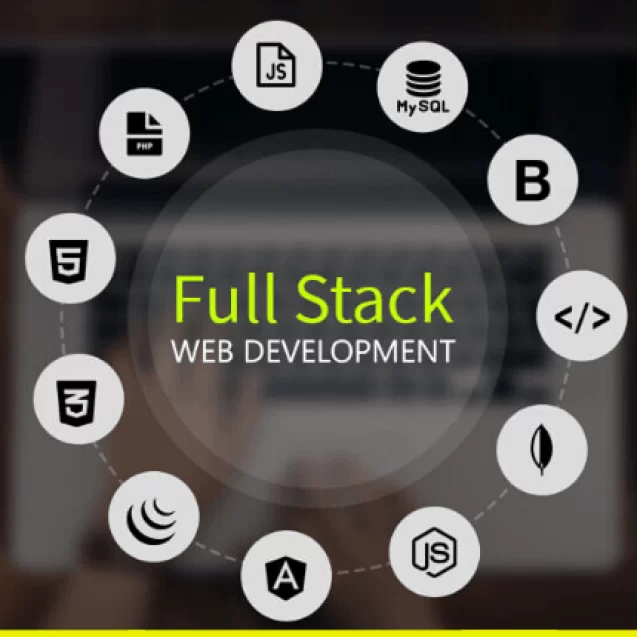

Full Stack Development refers to the ability to work on both the front end (client side) and the back end (server side) of a web application. A full stack developer is skilled in designing responsive user interfaces, writing server-side logic, connecting databases, and integrating APIs. In simple words, a full stack developer can build a complete web solution from scratch to deployment.
The Front End deals with how the website looks and feels. This involves technologies such as HTML, CSS, JavaScript, and frameworks like Bootstrap or React. On the other hand, the Back End focuses on the server, database, and application logic using languages such as Node.js, Python, Java, or PHP.
Mastering both sides enables developers to build efficient, scalable, and user-friendly applications. This combination of skills makes full stack developers highly valuable in today’s technology-driven job market.
A typical web application flow can be visualized as follows:
